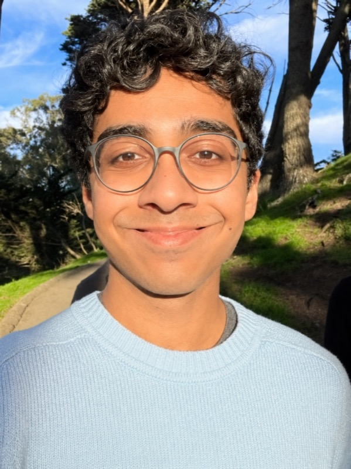

I'm a sophomore studying CS/Math at Stanford. I grew up in India, Azerbaijan, Dubai, and Texas.
I value human connection. It's inspired my work across deep learning, autonomy, policy, VC, and healthcare. I enjoy animating the inanimate (Gödel Escher Bach).
Previously: Youngest AI intern at General Motors/Cruise (ADAS team), where I trained VLAs for self-driving, and published deep learning for drug discovery research in high school (ACM, BROAD, 3rd at ISEF).
Currently: Pursuing research on robotics at Stanford's AI Lab (SAIL), youngest hire at Applied Intuition (AI Research), and co-host of STARTS (STEM+Arts) podcast (100K+ views, 49 countries, 50 episodes) & supporting bold ideas at NFX.
In my free time, I drink coffee, code, read, go on long walks, talk, shuffle through a diverse playlist ranging from electronic French music to pop, offload the dishwasher, play with my Labrador-Saluki-Akita dog Buster, test my limits at the gym, and cook (metaphorically and literally).